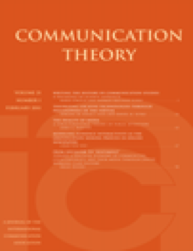
Communication Theory
Oxford University Press · 49 papers · latest 2026-07-17
2-year mean citedness 5.94 OpenAlex source
General CommunicationCritical and Cultural Communication
Journal dictionary
Broad seed registry assembled from ICA, NCA, current local digest coverage, and Communication-category source-list targets; expand with audit-journals when a downloaded SJR/Scopus source list is available.
Area

Oxford University Press · 49 papers · latest 2026-07-17
2-year mean citedness 5.94 OpenAlex source

Oxford University Press · 55 papers · latest 2026-07-09
2-year mean citedness 4.81 OpenAlex source

SAGE · 86 papers · latest 2026-07-28
2-year mean citedness 4.79 OpenAlex source

Oxford University Press · 36 papers · latest 2026-07-26
2-year mean citedness 4.05 OpenAlex source
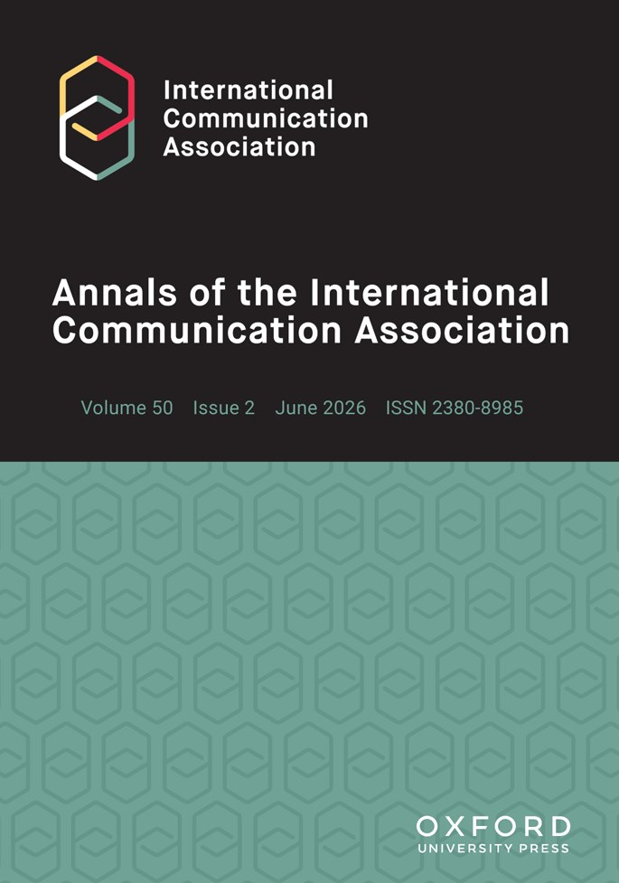
Oxford University Press · 63 papers · latest 2026-07-28
2-year mean citedness 3.70 OpenAlex source
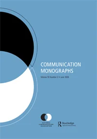
Taylor & Francis · 8 papers · latest 2026-07-15
2-year mean citedness 2.54 OpenAlex source
Taylor & Francis · 35 papers · latest 2026-07-07
2-year mean citedness 2.28 OpenAlex source
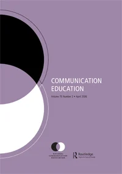
Taylor & Francis · 12 papers · latest 2026-07-29
2-year mean citedness 2.20 OpenAlex source
Hogrefe · 75 papers · latest 2026-07-24
2-year mean citedness 2.01 OpenAlex source

Taylor & Francis · 13 papers · latest 2026-07-26
2-year mean citedness 1.74 OpenAlex source
Taylor & Francis · 11 papers · latest 2026-07-22
2-year mean citedness 1.65 OpenAlex source
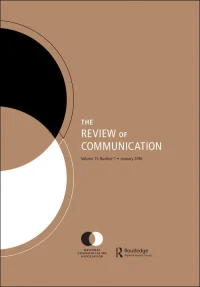
Taylor & Francis · 6 papers · latest 2026-07-15
2-year mean citedness 1.48 OpenAlex source
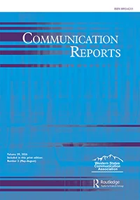
Taylor & Francis · 0 papers · latest —
2-year mean citedness 1.44 OpenAlex source
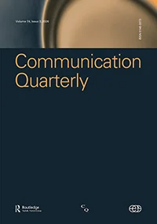
Taylor & Francis · 5 papers · latest 2026-07-25
2-year mean citedness 1.42 OpenAlex source
Taylor & Francis · 8 papers · latest 2026-07-28
2-year mean citedness 0.70 OpenAlex source
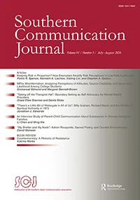
Taylor & Francis · 3 papers · latest 2026-06-22
2-year mean citedness 0.58 OpenAlex source
USC Annenberg Press · 104 papers · latest 2026-07-29
2-year mean citedness 0.11 OpenAlex source
Area

Taylor & Francis · 63 papers · latest 2026-07-28
2-year mean citedness 5.08 OpenAlex source

Cogitatio · 26 papers · latest 2026-07-30
2-year mean citedness 3.41 OpenAlex source
Taylor & Francis · 77 papers · latest 2026-07-28
2-year mean citedness 3.10 OpenAlex source
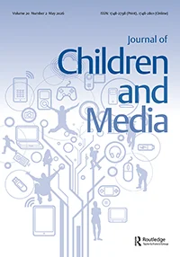
Taylor & Francis · 16 papers · latest 2026-07-28
2-year mean citedness 2.39 OpenAlex source
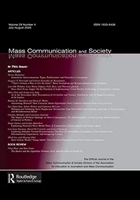
Taylor & Francis · 37 papers · latest 2026-07-23
2-year mean citedness 2.08 OpenAlex source
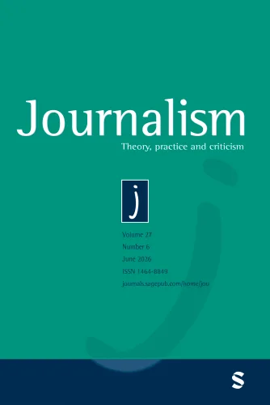
SAGE · 216 papers · latest 2026-07-30
2-year mean citedness 2.08 OpenAlex source
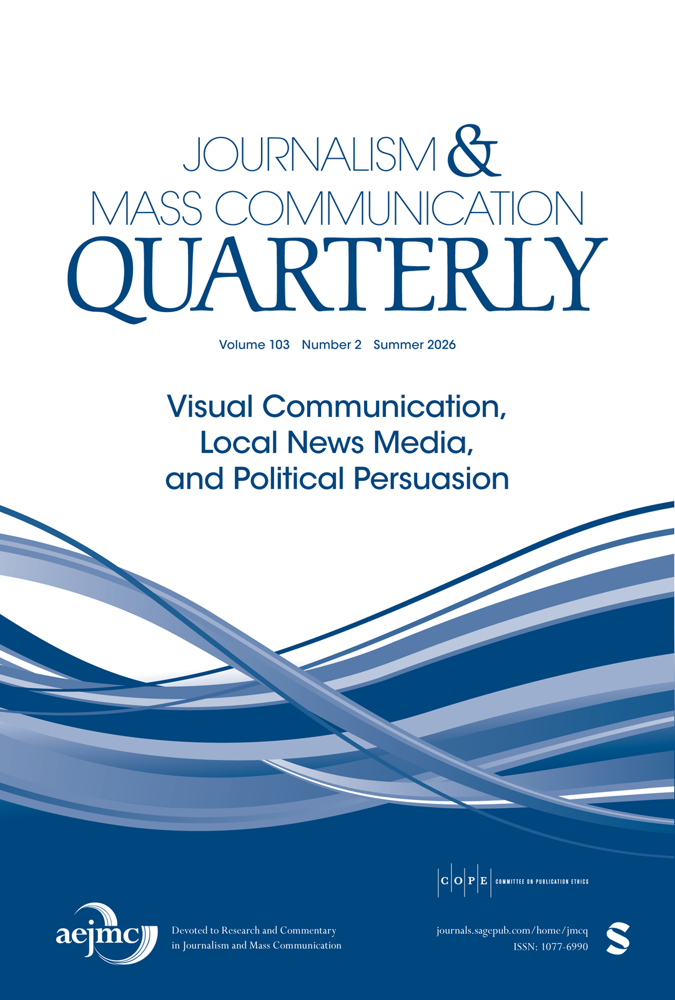
SAGE · 133 papers · latest 2026-07-29
2-year mean citedness 1.93 OpenAlex source

Taylor & Francis · 23 papers · latest 2026-07-29
2-year mean citedness 1.74 OpenAlex source
SAGE · 26 papers · latest 2026-07-19
2-year mean citedness 1.00 OpenAlex source
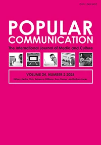
Taylor & Francis · 9 papers · latest 2026-07-21
2-year mean citedness 0.34 OpenAlex source
Area
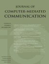
Oxford University Press · 38 papers · latest 2026-05-27
2-year mean citedness 7.54 OpenAlex source
SAGE · 197 papers · latest 2026-06-03
2-year mean citedness 4.98 OpenAlex source

SAGE · 221 papers · latest 2026-07-29
2-year mean citedness 4.48 OpenAlex source

SAGE · 150 papers · latest 2026-07-10
2-year mean citedness 4.32 OpenAlex source

Taylor & Francis · 95 papers · latest 2026-07-28
2-year mean citedness 3.33 OpenAlex source
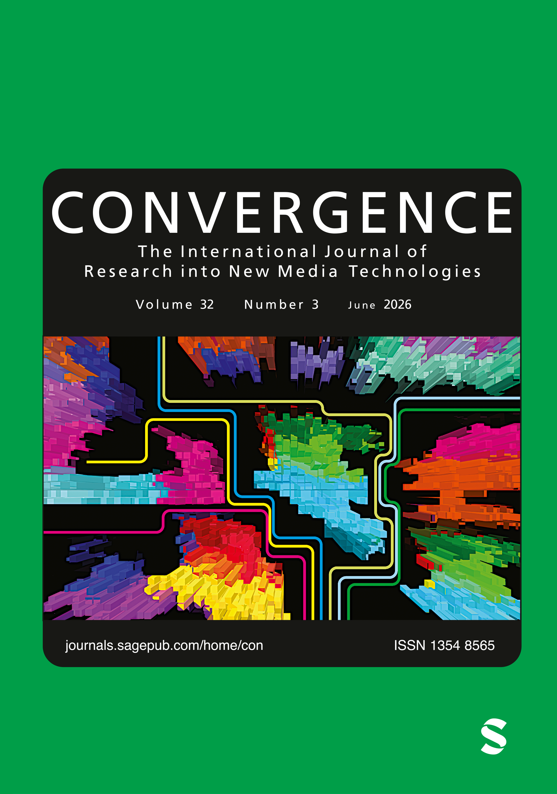
SAGE · 42 papers · latest 2026-07-30
2-year mean citedness 2.16 OpenAlex source
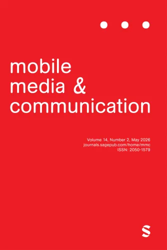
SAGE · 64 papers · latest 2026-07-23
2-year mean citedness 1.46 OpenAlex source
Area
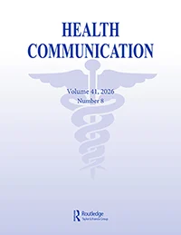
Taylor & Francis · 233 papers · latest 2026-07-28
2-year mean citedness 2.41 OpenAlex source

Taylor & Francis · 113 papers · latest 2026-07-28
2-year mean citedness 2.33 OpenAlex source
Area
SAGE · 226 papers · latest 2026-07-29
2-year mean citedness 2.10 OpenAlex source

Wiley · 79 papers · latest 2026-07-26
2-year mean citedness 1.66 OpenAlex source

Taylor & Francis · 7 papers · latest 2026-07-08
2-year mean citedness 1.40 OpenAlex source
Area

Taylor & Francis · 13 papers · latest 2026-07-26
2-year mean citedness 3.53 OpenAlex source
Area
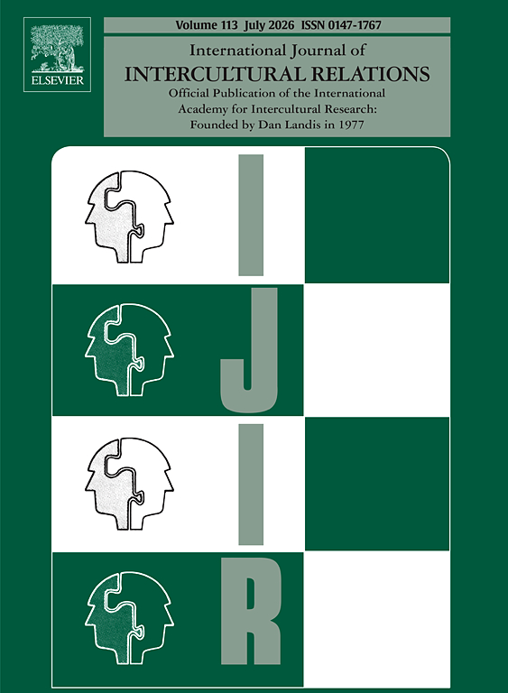
Elsevier · 104 papers · latest 2026-07-01
2-year mean citedness 2.72 OpenAlex source
Taylor & Francis · 7 papers · latest 2026-07-28
2-year mean citedness 2.01 OpenAlex source
SAGE · 48 papers · latest 2026-07-23
2-year mean citedness 1.83 OpenAlex source
Taylor & Francis · 1 papers · latest 2026-07-13
2-year mean citedness 1.30 OpenAlex source
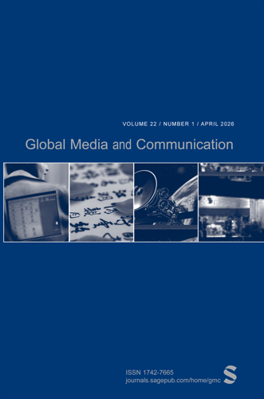
SAGE · 29 papers · latest 2026-07-19
2-year mean citedness 0.94 OpenAlex source

SAGE · 10 papers · latest 2026-07-29
2-year mean citedness 0.83 OpenAlex source
No journals match that search.